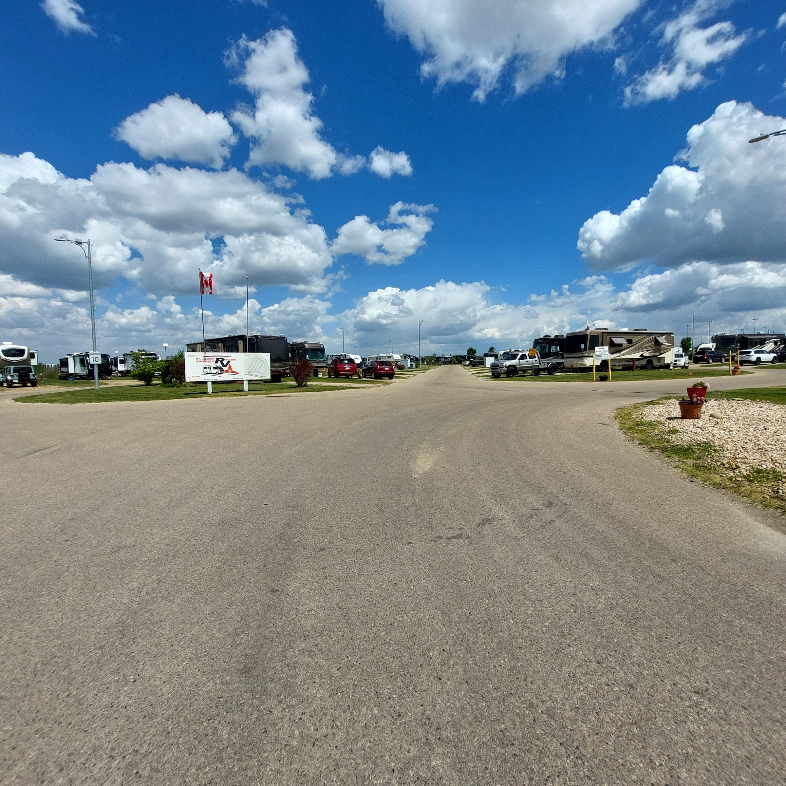
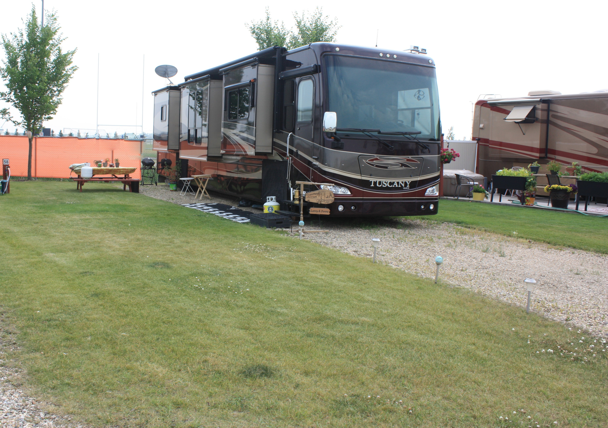
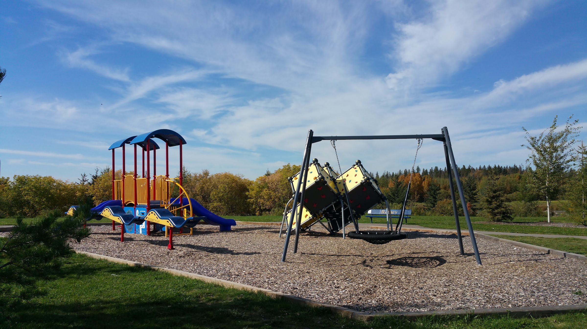

30+
Local organizations supported
Net revenue from the Rainmaker funds programs and services across community, social service, youth and minor sports organizations in and around St. Albert.

A 93-stall, full-service premier RV park built by the non-profit Kinsmen Club of St. Albert — opened in 2010, funded by community partners, and run by people who believe RV'ers are a culture worth gathering around.
Early on, we at the Kinsmen Club of St. Albert, Alberta, recognized RV'ers as a distinct culture. So, to us, nothing is more heart warming than the spontaneous gatherings, handshakes and pitch-in attitudes marking the arrival of any unit.
We know you'll appreciate our location: so close to any part of nearby Edmonton & the Capital Region; so close to nature-based recreation.
St. Albert is a thoroughly modern city in its own right, proclaiming convenient shopping, services, culture, and sports attractions. The Kinsmen Banquet Centre, a short walk east of the RV Park, caters every imaginable gathering from family socials and reunions to mid-sized conventions. You be the host and hostess.

With project funding provided by CAMRIF — a joint program of the Government of Canada, Government of Alberta, & the City of St. Albert — along with community funding from the Kinsmen Club of St. Albert, construction was completed on our new 93-stall, full-service premier RV park, which had its first full year of operation in the summer of 2010.
Project funding provided through CAMRIF — a federal-provincial-municipal joint program.
Provincial contribution to the same CAMRIF program that brought the park to life.
The host city's contribution to the CAMRIF funding that built the modern, full-service RV park.
Community funding from the Kinsmen Club rounded out the project — and we still run the park today as a non-profit.
A chartered member of the national service club, with a primary fundraiser — the Rainmaker — supporting local programs.
The Kinsmen RV Park is one of several parts of the broader St. Albert Kinsmen Banquet Centre, RV & Community Park.

The Kinsmen Club of St. Albert is a registered non-profit society and chartered member of the national service club, KIN Canada. The Club's primary fundraising activity is the Rainmaker Rodeo & Exhibition, funded by the resources of the Kinsmen Club. Net revenue generated from the Rainmaker is distributed to provide programs and services for over thirty worthy community, social service, youth and minor sports organizations in and around St. Albert.
Net revenue from the Rainmaker funds programs and services across community, social service, youth and minor sports organizations in and around St. Albert.
The Rainmaker has been hosted in St. Albert since 1965 by the St. Albert Family of Kin — and remains the club's signature fundraising activity.
The 93-stall, full-service premier RV park opened for its first full year of operation in the summer of 2010 — and is still going strong.
Come and enjoy scenic vistas and tranquility plus all that St. Albert has to offer — only 15 minutes south to West Edmonton Mall, with scenic cycling and walking trails plus bird and nature-viewing areas along Red Willow Park and Lois Hole Centennial Provincial Park right at your doorstep.
Scenic vistas, tranquility, and a non-profit operation that puts every stall back into the community.